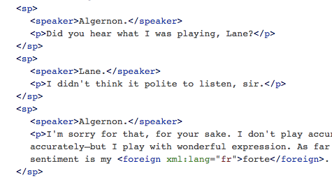
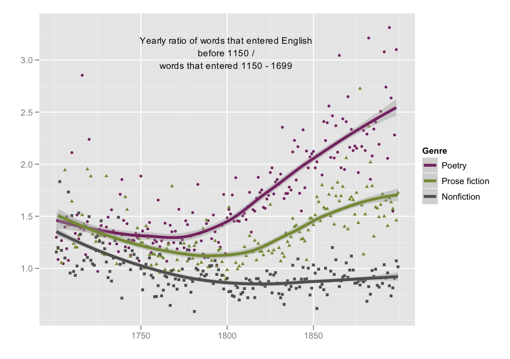
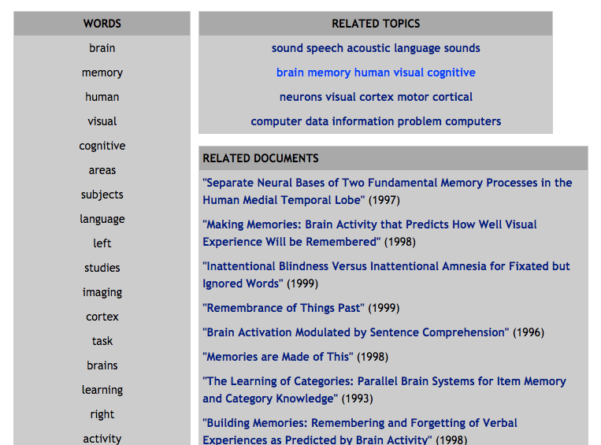
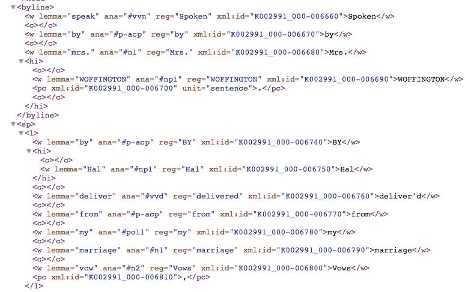

class: middle # Digital Humanities Approaches to Text Analysis Matthew J. Lavin Clinical Assistant Professor of English and Director of Digital Media Lab University of Pittsburgh January 2017 --- class: middle ## Overview - #### Computer-assisted hermeneutics vs. computational text analysis - #### Direct measures - #### Comparisons - #### Change over time - #### Clustering, classification - #### Choice of features - #### Choice of feature blocks --- class: middle ## Computer-assisted hermeneutics vs. computational text analysis - #### e.g., scholarly editing, TEI - #### Uses computers - #### Rely on hermeneutic or interpretive work - #### Often engage in argument by prototype - #### Often part of a pipeline for quantitative or scaled computation --- class: middle  --- class: middle ## Direct measures - #### Term counts - #### Type-token ratio - #### Parts-of-speech - #### Collocations - #### Named entity recognition - #### Sentiment scores --- class: middle ## Change over time - ### Germanic-Latinate ratio in literature, 1700-1920 (Underwood and Sellers) - ### Repetition in 19th Century American Fiction (Gemma et al) --- class: middle  --- class: middle ## Clustering, classification - ### Topic modeling (Blei and Lafferty) - ### Machine learning (Houston and Audenaert) --- class: middle  --- class: middle ## Choice of features - #### High frequency function words - #### N-grams - #### Term frequencies - #### Parts of speech - #### Sentiment scores - #### Shape of text block --- class: middle  --- class: middle ## Choice of feature blocks - ### A novel - ### Novels in a span of years - ### A chapter - ### A chunk - ### A TEI element or group of elements (e.g. all lines spoken by Hamlet) --- class: middle ## Bibliography - Binongo, José Nilo G. "Who Wrote the 15th Book of Oz? An Application of Multivariate Analysis to Authorship Attribution." Chance 16.2 (2003): 9–17. Print. - Blei, David M., and John D. Lafferty. "A Correlated Topic Model of Science." The Annals of Applied Statistics 1.1 (2007): 17–35. Print. - Gemma, Marissa, Frédéric Glorieux, and Jean-Gabriel Ganascia. "Operationalizing the Colloquial Style: Repetition in 19th-Century American Fiction." Digital Scholarship in the Humanities (2015): fqv066. dsh.oxfordjournals.org. Web. - Houston, Natalie, and Neal Audenaert. "Visual Page: Towards Large Scale Analysis of Nineteenth-Century Print Culture" 2013 IEEE International Conference on Big Data. October 2013. 9-16. - Liddle, Dallas. "Genre: 'Distant Reading' and the Goals of Periodicals Research." Victorian Periodicals Review 48.3 (2015): 383–402. Project MUSE. Web. - Underwood, Ted, and Jordan Sellers. "The Emergence of Literary Diction." Journal of Digital Humanities 1.2 (2012): 1–2. Web. (See also bibliography.md in repo)